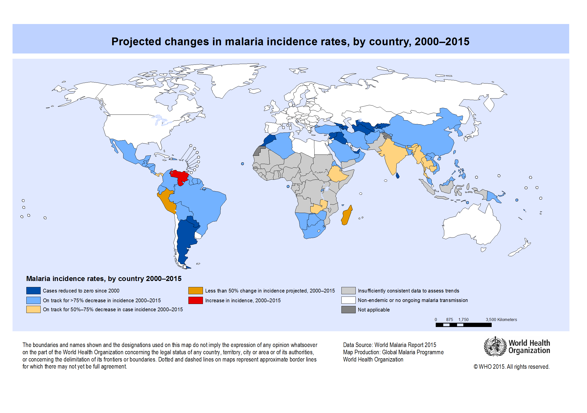
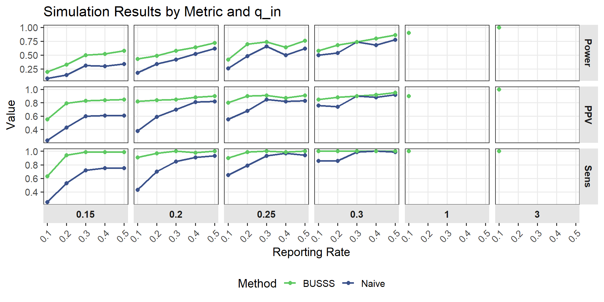
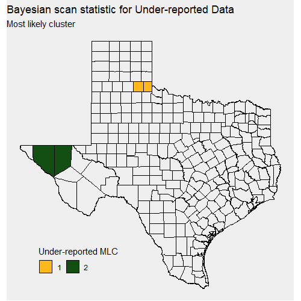

timeline
title Spatial Scan Statistic Development
1965 : Conceptual basis - Naus
1997 : Basic Spatial Scan Statistic (Frequentist)
1998 : Space-Time Extension (Frequentist)
2005 : Flexible Shapes (Frequentist)
2005 : Bayesian Spatial Scan Statistic
2007 : Multivariate Spatial Scan Statistic (Frequentist)
2012 : Overdispersed data extension (Frequentist)
2017 : Bayesian Spatial Scan Statistic for Zero-inflated count data
2018 : Wald-based Spatial Scan Statistics (Frequentist)
2024 : Bayesian Spatial Scan Statistic for Multinormal data
A Bayesian Spatial Scan Statistic for Under-reported Data
August 14, 2025
Introduction
Public Health Surveillance

- Public health surveillance
- The systematic, ongoing assessment of the health of a community including the timely collection, analysis, interpretation, dissemination and subsequent use of data. 1
Motivation
A subset of disease surveillance methods focus on disease progression and outbreak detection.
Novel disease monitoring
New diseases often lack reliable testing and reporting systems. Early cases may be missed or misclassified, obscuring disease surveillance techniques that assume complete cases.
Examples
- COVID-19
- HIV/AIDS
- Tuberculosis (TB)
Spatial Scan Statistics
General Concept
Scan statistics
- Select candidate regions
- Calculate relative risk inside and outside of candidate region
- Determine region with largest difference
Frequentist Spatial Scan Statistic
- Suppose we observe counts \(z_i\) and have baselines \(b_i\) for regions \(i = 1, \ldots, n\).
- Using the likelihood function \(g(\cdot)\) parameterized by a rate or probability
\[ H_0: \text{No cluster (common rate for all regions)} \\ H_1(S): \text{Cluster in subset }S\text{ with elevated rate vs. outside } S \]
- Compute likelihood ratio test statistic for each candidate zone \(S\)
- The scan statistic test statistic is \(\Lambda = \max_{S \in C}\lambda(S)\).
- Generate Monte Carlo samples under \(H_0\) to calculate P-value
Bayesian Spatial Scan Statistics
Bayesian Interpretation
| BF | Log(BF) | Strength of evidence \(H_0\) |
|---|---|---|
| 1 to 3.2 | 0 to 1.16 | Not Significant |
| 3.2 to 10 | 1.16 to 2.30 | Positive |
| 10 to 100 | 2.30 to 4.61 | Strong |
| \(>\) 100 | \(> 4.61\) | Decisive |
Scan Statistic Timeline
- Since the formalization in 1997 spatial scan statistics have been used and described as a method for epidemiologists
- No extension to account for under-reported count data
Proposed Method
Accounting for Under-reporting
Most methods proposed for modeling under-reported or misclassified data fall into two categories:
- Double sampling
- latent variable models
Model
We propose a novel Bayesian spatial scan statistic model by modeling the true counts as a latent variable and introducing reporting probability \(p\).
Setting Priors
Simulation Study
Simulation Design
Simulation Metrics
Even when the null hypothesis is correctly rejected, the detected clusters rarely match the true cluster exactly.
To evaluate how well they overlap we will use:
- Sensitivity: Proportion of true cases correctly included
- Positive Predicted Value (PPV): Proportion of detected cases that are actually in the true cluster
Simulation Results
| Reporting | qin | Naive BSSS | BUSSS | ||||
|---|---|---|---|---|---|---|---|
| Power | Sensitivity | PPV | Power | Sensitivity | PPV | ||
| q_in = 5.00 | |||||||
| 0.1 | 5.00 | 1.00 | 1.00 | 1.00 | 1.00 | 1.00 | 1.00 |
| q_in = 3.00 | |||||||
| 0.1 | 3.00 | 0.90 | 1.00 | 0.90 | 0.90 | 1.00 | 0.90 |
| q_in = 2.30 | |||||||
| 0.1 | 2.30 | 0.50 | 0.86 | 0.76 | 0.58 | 1.00 | 0.85 |
| 0.2 | 2.30 | 0.54 | 0.86 | 0.74 | 0.68 | 1.00 | 0.88 |
| 0.3 | 2.30 | 0.74 | 0.99 | 0.90 | 0.74 | 1.00 | 0.90 |
| 0.4 | 2.30 | 0.68 | 1.00 | 0.88 | 0.80 | 1.00 | 0.92 |
| 0.5 | 2.30 | 0.84 | 0.99 | 0.95 | 0.86 | 1.00 | 0.95 |
| q_in = 2.25 | |||||||
| 0.1 | 2.25 | 0.26 | 0.65 | 0.55 | 0.42 | 0.90 | 0.80 |
| 0.2 | 2.25 | 0.48 | 0.79 | 0.68 | 0.70 | 0.99 | 0.90 |
| 0.6 | 2.25 | 0.76 | 0.93 | 0.91 | 0.80 | 1.00 | 0.92 |
| 1.0 | 2.25 | 0.86 | 1.00 | 0.94 | 0.86 | 1.00 | 0.94 |
| q_in = 2.20 | |||||||
| 0.1 | 2.20 | 0.18 | 0.43 | 0.38 | 0.43 | 0.91 | 0.82 |
| 0.2 | 2.20 | 0.34 | 0.70 | 0.59 | 0.49 | 0.97 | 0.84 |
| 0.3 | 2.20 | 0.42 | 0.85 | 0.70 | 0.58 | 1.00 | 0.85 |
| q_in = 2.15 | |||||||
| 0.1 | 2.15 | 0.08 | 0.25 | 0.24 | 0.20 | 0.63 | 0.55 |
| 0.2 | 2.15 | 0.14 | 0.53 | 0.43 | 0.33 | 0.94 | 0.79 |
| 0.3 | 2.15 | 0.31 | 0.72 | 0.60 | 0.50 | 0.99 | 0.83 |
Simulation Results Visual
Data Application
Texas COVID-19 Data
- COVID-19 data in early 2020 were severely under-reported due to limited testing and dificulty to diagnose (Hortaçsu, Liu, and Schwieg 2021)
- Data (254 Counties)
- COVID-19 cases (Probable and Confirmed)
- Population
Real Data (priors)
- Estimates from early COVID-19 studies suggest very low reporting rates (\(\approx 10\%\)), with low probability of exceeding 30\(\%\) (Chen, Song, Stamey 2022).
- This information results in a prior of \(p \sim \text{Beta}(7, 55)\)1
- Difusse priors where fit to \(q_\cdot\) parameters
\[ q_{all} \sim \text{gamma}() \\ q_{out} \sim \text{gamma}() \\ q_{in} \sim \text{gamma}() \]
Real Data Results
Both methods provide different most likely clusters;
- Naive: Around the city of Houston
- Under-reported: Around El Paso and north of DFW.
Bayes factors for each identified cluster is very large indicating significant evidence in favor of \(H_1\) over \(H_0\).


Discussion
- Traditional scan statistics may fail when case counts are under-reported, common in emerging outbreaks
- The proposed method models reporting probability, improving cluster detection under incomplete data
- Comparison with confirmed cases suggest some true clusters (Texas Panhandle) remain undetected, indicating further refinement is needed
Future work
- Extend to spatiotemporal model for real-time detection
- Incorporate multivariate outcomes
- Allow spatially varying rates to reflect local testing access
Bibliography

Nathen Byford